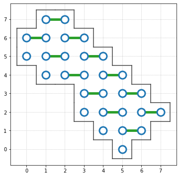

Module hybridq.architecture.google.sycamore
Author: Salvatore Mandra (salvatore.mandra@nasa.gov)
Copyright © 2021, United States Government, as represented by the Administrator of the National Aeronautics and Space Administration. All rights reserved.
The HybridQ: A Hybrid Simulator for Quantum Circuits platform is licensed under the Apache License, Version 2.0 (the "License"); you may not use this file except in compliance with the License. You may obtain a copy of the License at http://www.apache.org/licenses/LICENSE-2.0.
Unless required by applicable law or agreed to in writing, software distributed under the License is distributed on an "AS IS" BASIS, WITHOUT WARRANTIES OR CONDITIONS OF ANY KIND, either express or implied. See the License for the specific language governing permissions and limitations under the License.
Types
Qubit: tuple[int, int]
QpuLayout: list[Qubit]
Coupling: tuple[Qubit, Qubit]
Attributes
drawing:str- Drawing of the Google Sycamore QPU.
layout:QpuLayout- Qubits available in Google Sycamore QPU.
couplings:list[Coupling]- All couplings available in Google Sycamore QPU.
get_layers:callable[QpuLayout] -> dict[str, list[Coupling]]- Given a
QpuLayoutreturns layers of couplings as defined in "Quantum supremacy using a programmable superconducting processor" [Nature 574 (7779), 505-510].
Expand source code
"""
Author: Salvatore Mandra (salvatore.mandra@nasa.gov)
Copyright © 2021, United States Government, as represented by the Administrator
of the National Aeronautics and Space Administration. All rights reserved.
The HybridQ: A Hybrid Simulator for Quantum Circuits platform is licensed under
the Apache License, Version 2.0 (the "License"); you may not use this file
except in compliance with the License. You may obtain a copy of the License at
http://www.apache.org/licenses/LICENSE-2.0.
Unless required by applicable law or agreed to in writing, software distributed
under the License is distributed on an "AS IS" BASIS, WITHOUT WARRANTIES OR
CONDITIONS OF ANY KIND, either express or implied. See the License for the
specific language governing permissions and limitations under the License.
Types
-----
**`Qubit`**: `tuple[int, int]`
**`QpuLayout`**: `list[Qubit]`
**`Coupling`**: `tuple[Qubit, Qubit]`
Attributes
----------
drawing: str
Drawing of the Google Sycamore QPU.
layout: QpuLayout
Qubits available in Google Sycamore QPU.
couplings: list[Coupling]
All couplings available in Google Sycamore QPU.
get_layers: callable[QpuLayout] -> dict[str, list[Coupling]]
Given a `QpuLayout` returns layers of couplings as defined in
"Quantum supremacy using a programmable superconducting processor"
[Nature 574 (7779), 505-510].
"""
from __future__ import annotations
from typing import List, Tuple, Callable
from hybridq.architecture.utils import get_layout_from_drawing as get_layout
from hybridq.utils import sort, argsort
__all__ = [
'drawing', 'layout', 'couplings', 'get_all_couplings', 'get_layer',
'get_layers'
]
# Define Qubit type
Qubit = Tuple[int, int]
# Define Coupling
Coupling = Tuple[Qubit, Qubit]
# Define QpuLayout
QpuLayout = List[Qubit]
# Drawing
drawing = r"""
X-X
| |
X-X-X-X
| | | |
X-X-X-X-X-X
| | | | | |
X-X-X-X-X-X-X-X
| | | | | | | |
X-X-X-X-X-X-X-X-X
| | | | | | | |
X-X-X-X-X-X-X-X-X
| | | | | |
X-X-X-X-X-X
| | | | |
X-X-X-X-X
| | |
X-X-X
|
X
"""
# Get couplings and layout
layout, couplings = get_layout(drawing)
def get_all_couplings(qpu_layout: QpuLayout) -> list[Coupling]:
"""
Given `qpu_layout` of `Qubit`s, return all couplings between nearest
neighbors.
Parameters
----------
qpu_layout: QpuLayout
List of `Qubit`s to use as `QpuLayout`.
Returns
-------
list[Coupling]
List of all possible couplings between nearest neighbor `Qubit`s.
Example
-------
>>> get_all_couplings(qpu_layout=((0, 0), (0, 1), (1, 0), (1, 1)))
[((0, 0), (0, 1)), ((0, 0), (1, 0)), ((0, 1), (1, 1)), ((1, 0), (1, 1))]
"""
return sort({
tuple(sort(((x1, y1), (x2, y2))))
for x1, y1 in qpu_layout
for x2, y2 in qpu_layout
if x1 == x2 and abs(y1 - y2) == 1 or y1 == y2 and abs(x1 - x2) == 1
})
# Check for consistency
from hybridq.extras.architecture.sycamore.sycamore import gmon54 as __gmon54, \
get_all_couplings as __get_all_couplings
assert (layout == __gmon54)
assert (couplings == __get_all_couplings(__gmon54))
assert (couplings == get_all_couplings(layout))
def get_layer(layer_idx: str,
qpu_layout: list[Qubit] = None) -> dict[str, list[Coupling]]:
"""
Returns layers used in Google Quantum Supremacy Paper [Nature 574 (7779), 505-510].
Parameters
----------
layer_idx: str
Layer idx used in [Nature 574 (7779), 505-510]. Valid `layer_idx`
values are 'A', 'B', 'C', 'D', 'E', 'F', 'G', or 'H'.
qpu_layout: QpuLayout, optional
List of `Qubit`s to use as `QpuLayout`. (default: `hybridq.architecture.google.sycamore`)
Returns
-------
list[Coupling]
`Coupling`s corresponding to `layer_idx`.
"""
from hybridq.architecture.google.sycamore import layout as _layout
# Check if layer_idx is valid
if not isinstance(layer_idx,
str) or not layer_idx.upper() in list('ABCDEFGH'):
raise ValueError("Valid 'layer_idx' values are 'A', "
"'B', 'C', 'D', 'E', 'F', 'G' and 'H'")
# Get qpu_layout
qpu_layout = _layout if qpu_layout is None else list(qpu_layout)
# Get couplings
couplings = get_all_couplings(qpu_layout)
# To upper
layer_idx = layer_idx.upper()
# Filter couplings (supremacy layout)
if layer_idx == 'A':
return list(
filter(
lambda q: (not (q[0][0] + q[0][1]) % 2) and q[0][1] == q[1][1],
couplings))
elif layer_idx == 'B':
return list(
filter(lambda q: ((q[0][0] + q[0][1]) % 2) and q[0][1] == q[1][1],
couplings))
elif layer_idx == 'C':
return list(
filter(lambda q: ((q[0][0] + q[0][1]) % 2) and q[0][0] == q[1][0],
couplings))
elif layer_idx == 'D':
return list(
filter(
lambda q: (not (q[0][0] + q[0][1]) % 2) and q[0][0] == q[1][0],
couplings))
# Filter couplings (simplifiable layout)
elif layer_idx == 'E':
return list(
filter(lambda q: (not q[0][1] % 2) and q[0][0] == q[1][0],
couplings))
elif layer_idx == 'F':
return list(
filter(lambda q: (q[0][1] % 2) and q[0][0] == q[1][0], couplings))
elif layer_idx == 'G':
return list(
filter(lambda q: (not q[0][0] % 2) and q[0][1] == q[1][1],
couplings))
elif layer_idx == 'H':
return list(
filter(lambda q: (q[0][0] % 2) and q[0][1] == q[1][1], couplings))
def get_layers(qpu_layout: list[Qubit] = None) -> dict[str, list[Coupling]]:
"""
Return layers used in Google Quantum Supremacy Paper [Nature 574 (7779), 505-510].
Parameters
----------
qpu_layout: QpuLayout, optional
List of `Qubit`s to use as `QpuLayout`. (default: `hybridq.architecture.google.sycamore`)
Returns
-------
dict[str, list[Coupling]]
Map between layer name and the list of corresponding `Coupling`s.
Example
-------
>>> from hybridq.architecture.google.sycamore import layout as gmon54, get_layers
>>> from hybridq.architecture.plot import plot_qubits
>>> qpu_layout = [(x, y) for x, y in gmon54 if x + y < 10]
>>> layers = get_layers(qpu_layout=qpu_layout)
>>> layers.keys()
dict_keys(['A', 'B', 'C', 'D', 'E', 'F', 'G', 'H'])
>>> layers['A']
[((0, 6), (1, 6)),
((1, 5), (2, 5)),
((1, 7), (2, 7)),
((2, 4), (3, 4)),
((2, 6), (3, 6)),
((3, 3), (4, 3)),
((3, 5), (4, 5)),
((4, 2), (5, 2)),
((4, 4), (5, 4)),
((5, 1), (6, 1)),
((5, 3), (6, 3)),
((6, 2), (7, 2))]
>>> plot_qubits(qpu_layout=qpu_layout, layout=layers['A'])
.. image:: ../../images/qpu_layout_plot_small.png
"""
return {l: get_layer(l, qpu_layout) for l in 'ABCDEFGH'}Functions
def get_all_couplings(qpu_layout: QpuLayout) ‑> list[Coupling]-
Given
qpu_layoutofQubits, return all couplings between nearest neighbors.Parameters
qpu_layout:QpuLayout- List of
Qubits to use asQpuLayout.
Returns
list[Coupling]- List of all possible couplings between nearest neighbor
Qubits.
Example
>>> get_all_couplings(qpu_layout=((0, 0), (0, 1), (1, 0), (1, 1))) [((0, 0), (0, 1)), ((0, 0), (1, 0)), ((0, 1), (1, 1)), ((1, 0), (1, 1))]Expand source code
def get_all_couplings(qpu_layout: QpuLayout) -> list[Coupling]: """ Given `qpu_layout` of `Qubit`s, return all couplings between nearest neighbors. Parameters ---------- qpu_layout: QpuLayout List of `Qubit`s to use as `QpuLayout`. Returns ------- list[Coupling] List of all possible couplings between nearest neighbor `Qubit`s. Example ------- >>> get_all_couplings(qpu_layout=((0, 0), (0, 1), (1, 0), (1, 1))) [((0, 0), (0, 1)), ((0, 0), (1, 0)), ((0, 1), (1, 1)), ((1, 0), (1, 1))] """ return sort({ tuple(sort(((x1, y1), (x2, y2)))) for x1, y1 in qpu_layout for x2, y2 in qpu_layout if x1 == x2 and abs(y1 - y2) == 1 or y1 == y2 and abs(x1 - x2) == 1 }) def get_layer(layer_idx: str, qpu_layout: list[Qubit] = None) ‑> dict[str, list[Coupling]]-
Returns layers used in Google Quantum Supremacy Paper [Nature 574 (7779), 505-510].
Parameters
layer_idx:str- Layer idx used in [Nature 574 (7779), 505-510]. Valid
layer_idxvalues are 'A', 'B', 'C', 'D', 'E', 'F', 'G', or 'H'. qpu_layout:QpuLayout, optional- List of
Qubits to use asQpuLayout. (default:hybridq.architecture.google.sycamore)
Returns
list[Coupling]Couplings corresponding tolayer_idx.
Expand source code
def get_layer(layer_idx: str, qpu_layout: list[Qubit] = None) -> dict[str, list[Coupling]]: """ Returns layers used in Google Quantum Supremacy Paper [Nature 574 (7779), 505-510]. Parameters ---------- layer_idx: str Layer idx used in [Nature 574 (7779), 505-510]. Valid `layer_idx` values are 'A', 'B', 'C', 'D', 'E', 'F', 'G', or 'H'. qpu_layout: QpuLayout, optional List of `Qubit`s to use as `QpuLayout`. (default: `hybridq.architecture.google.sycamore`) Returns ------- list[Coupling] `Coupling`s corresponding to `layer_idx`. """ from hybridq.architecture.google.sycamore import layout as _layout # Check if layer_idx is valid if not isinstance(layer_idx, str) or not layer_idx.upper() in list('ABCDEFGH'): raise ValueError("Valid 'layer_idx' values are 'A', " "'B', 'C', 'D', 'E', 'F', 'G' and 'H'") # Get qpu_layout qpu_layout = _layout if qpu_layout is None else list(qpu_layout) # Get couplings couplings = get_all_couplings(qpu_layout) # To upper layer_idx = layer_idx.upper() # Filter couplings (supremacy layout) if layer_idx == 'A': return list( filter( lambda q: (not (q[0][0] + q[0][1]) % 2) and q[0][1] == q[1][1], couplings)) elif layer_idx == 'B': return list( filter(lambda q: ((q[0][0] + q[0][1]) % 2) and q[0][1] == q[1][1], couplings)) elif layer_idx == 'C': return list( filter(lambda q: ((q[0][0] + q[0][1]) % 2) and q[0][0] == q[1][0], couplings)) elif layer_idx == 'D': return list( filter( lambda q: (not (q[0][0] + q[0][1]) % 2) and q[0][0] == q[1][0], couplings)) # Filter couplings (simplifiable layout) elif layer_idx == 'E': return list( filter(lambda q: (not q[0][1] % 2) and q[0][0] == q[1][0], couplings)) elif layer_idx == 'F': return list( filter(lambda q: (q[0][1] % 2) and q[0][0] == q[1][0], couplings)) elif layer_idx == 'G': return list( filter(lambda q: (not q[0][0] % 2) and q[0][1] == q[1][1], couplings)) elif layer_idx == 'H': return list( filter(lambda q: (q[0][0] % 2) and q[0][1] == q[1][1], couplings)) def get_layers(qpu_layout: list[Qubit] = None) ‑> dict[str, list[Coupling]]-
Return layers used in Google Quantum Supremacy Paper [Nature 574 (7779), 505-510].
Parameters
qpu_layout:QpuLayout, optional- List of
Qubits to use asQpuLayout. (default:hybridq.architecture.google.sycamore)
Returns
dict[str, list[Coupling]]- Map between layer name and the list of corresponding
Couplings.
Example
>>> from hybridq.architecture.google.sycamore import layout as gmon54, get_layers >>> from hybridq.architecture.plot import plot_qubits >>> qpu_layout = [(x, y) for x, y in gmon54 if x + y < 10] >>> layers = get_layers(qpu_layout=qpu_layout) >>> layers.keys() dict_keys(['A', 'B', 'C', 'D', 'E', 'F', 'G', 'H']) >>> layers['A'] [((0, 6), (1, 6)), ((1, 5), (2, 5)), ((1, 7), (2, 7)), ((2, 4), (3, 4)), ((2, 6), (3, 6)), ((3, 3), (4, 3)), ((3, 5), (4, 5)), ((4, 2), (5, 2)), ((4, 4), (5, 4)), ((5, 1), (6, 1)), ((5, 3), (6, 3)), ((6, 2), (7, 2))] >>> plot_qubits(qpu_layout=qpu_layout, layout=layers['A'])
Expand source code
def get_layers(qpu_layout: list[Qubit] = None) -> dict[str, list[Coupling]]: """ Return layers used in Google Quantum Supremacy Paper [Nature 574 (7779), 505-510]. Parameters ---------- qpu_layout: QpuLayout, optional List of `Qubit`s to use as `QpuLayout`. (default: `hybridq.architecture.google.sycamore`) Returns ------- dict[str, list[Coupling]] Map between layer name and the list of corresponding `Coupling`s. Example ------- >>> from hybridq.architecture.google.sycamore import layout as gmon54, get_layers >>> from hybridq.architecture.plot import plot_qubits >>> qpu_layout = [(x, y) for x, y in gmon54 if x + y < 10] >>> layers = get_layers(qpu_layout=qpu_layout) >>> layers.keys() dict_keys(['A', 'B', 'C', 'D', 'E', 'F', 'G', 'H']) >>> layers['A'] [((0, 6), (1, 6)), ((1, 5), (2, 5)), ((1, 7), (2, 7)), ((2, 4), (3, 4)), ((2, 6), (3, 6)), ((3, 3), (4, 3)), ((3, 5), (4, 5)), ((4, 2), (5, 2)), ((4, 4), (5, 4)), ((5, 1), (6, 1)), ((5, 3), (6, 3)), ((6, 2), (7, 2))] >>> plot_qubits(qpu_layout=qpu_layout, layout=layers['A']) .. image:: ../../images/qpu_layout_plot_small.png """ return {l: get_layer(l, qpu_layout) for l in 'ABCDEFGH'}